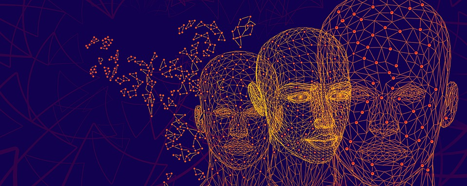

Verbeter ons leefsystem middels levensloopsimulaties
stel de mens centraal binnen overheidsdomein zorg, werk en inkomen
Één van de belangrijkste doelstellingen van Virtual Society is de
bevordering van zelfredzaamheid van de inwoners in ons land. Dit gaat
hand in hand met onze participatie samenleving. Deze is toe aan
verregaande modernisering en vragen om nieuwe visies, missies en
een gedegen, brede, digitale strategie. Binnen onze Innovatieve Virtual
Society Startup beproeven wij vanuit simulaties allerlei hypothesen
die nodig zijn voor een moderne en betere dienstverlening voor de
inwoners. Het doel van de simulaties is inzicht te krijgen in hoe wet
en regelgeving beter vormgegeven kan worden. Hierbij is het uitgangspunt
dat inwoners altijd regie over eigen gegevens hebben zodat zij veilig
hun digitale identiteit op kunnen bouwen om zo gebruik te kunnen maken
van toegankelijke diensten binnen de e-overheid.
"Vaak voeren we discussies aan de hand van cijfers. Maar de levens van
ruim 17 miljoen individuele Nederlanders passen niet in een mal. Mensen
volgen een opleiding, veranderen van baan, starten een onderneming,
kopen een huis, gaan relaties aan, krijgen kinderen, of worden getroffen
door ziekte of verlies van een dierbare. Het zijn dit soort keuzes en
gebeurtenissen die grote impact hebben. Veel groter dan een
koopkrachtcijfer, een macro-economisch groeipercentage of een
belastingmaatregel. Geen enkel leven voegt zich naar de mediaan van
een statistisch model."
Bron: Troonrede 17 september 2019 Koning Willem-Alexander
Deze startup is in voorbereiding en begint op 1 Oktober aan 3 Program Increments (3 Maanden) om een eerste Minimum Viable Product (MVP) op te leveren.
DIGITAL TWIN
Wij introduceren de Digital Twin binnen het sociale overheidsdomein om efficiënter oplossingen te kunnen ontwikkelen dan nu mogelijk is door het sterk verouderde informatienetwerk van de overheid. De Digital Twin is een digitale replica van een levende of niet-levende fysieke entiteit. Door de fysieke en de virtuele wereld te overbruggen, worden gegevens naadloos overgedragen, waardoor de virtuele entiteit gelijktijdig met de fysieke entiteit kan bestaan. Binnen de industriële sector gebruikt men het principe al sinds 2002 om processen continu te kunnen meten en verbeteren.
DIGITALE IDENTITEIT
Voor ons staat op de eerste plaats dat de inwoner over haar eigen gegevens beschikken. Dit noemen wij regie op eigen gegevens. Jouw digitale identiteit bestaat uit vele attributen die jouw profiel maken. Jij bepaalt als inwoner zelf met wie jij zaken doet binnen het betrouwbare digitale netwerk. Hierbij is de technologie zo veilig dat je niet geprofileerd kan worden van buitenaf. Wij omhelsen dan ook het principe; privacy by design.
DIGITALE ONTOLOGIE
Ontologie is de filosofische studie van het zijn. Meer in het algemeen bestudeert het concepten die direct verband houden met zijn, in het bijzonder worden, bestaan, realiteit, evenals de basiscategorieën van zijn en hun relaties. Binnen simulaties slaan we deze relaties en de basis van zijn op. Hierbij maken we een distinctie tussen natuurlijke processen en processen die daar als antwoord vanuit het wet en regel systeem komen. Virtual Society stelt zich ten doel om de natuurlijke processen als life events aan te bieden aan deze systemen.
DESIGN SYSTEM
Een goed system voor user Experience design is onontbeerlijk om de mens centraal te stellen. Échter, huidige design systems hebben een beperking. Alhoewel een set van voorgedefinieerde klik-paden in een user interface opgenomen kunnen worden, zijn complexere customer journey's bijna onmogelijk. Bij Virtual Society geloven we in een componenten bibliotheek met geteste user interface componenten, waar bij eerst alle atributen voor de journey uit de simulatie aanwezig zijn, alvorens men het UX design goed kan testen met de eindgebruikers.
VR / SERIOUS GAMING
Immersieve interacties met onze simulatie omgeving zijn een must. Bij complexe proces simulaties is het belangrijk dat er een hoge mate van beleving is voor het menselijk brein. Vanuit het afspelen van de simulatie in Virtual Reality binnen multi-user omgevingen is kennis overdracht optimaal. Door dit actieve leerprocess zijn onze hersennen staat 70-90% meer te herinneren dan het geval is bij passieve leerprocessen, zoals lezen. Ook wordt het vanwege rich media tecnieken aantrekkelijker om workshops te organiseren voor derde partijen om een blijvende indruk achter te laten.
DISCRETE EVENT SIMULATION
DES modelleert de werking van een systeem als een (discrete) opeenvolging van gebeurtenissen in de tijd. Elke gebeurtenis vindt plaats op een bepaald tijdstip en markeert een statusverandering in het systeem. Deze simulaties brengen ons ver voorbij de limitatie van interpretatie van statistische gegevens waarop wij binnen het huidige systeem regelmatig beslissingen nemen. Middels DES kunnen wij ver voorbij de statistiek de vele interacties tussen probabiliteiten testen in het systeem. Waar we nu blijven hangen in problemen op lossen binnen de vele technische silo's in de overheid kunnen we nu, de integraal middels simulaties complexe problemen oplossen over de organisatiegrenzen heen.